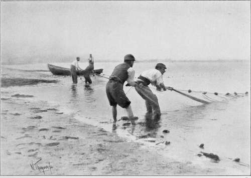

Some Useful Formulae
Description
This section is from the book "The Barnet Book Of Photography", by Herts Barnet. Also available from Amazon: The Barnet Book Of Photography.
Some Useful Formulae
Developers For Barnet Plates And Papers
Pyro-Soda Developer For Plates Or Films. Solution A
Pyro stock :—
Potassium metabisulphite . . .100 grains Dissolve in water, then add pyro . 1 ounce Potassium bromide .... 60 grains Shake till dissolved, and make up to measure eight ounces with water.
No. 1 Solution
Developer : —
Pyro stock, Solution A ... 2 ounces Water . . • . . 18
No. 2 Solution
Sodium carbonate crystals ... 2 ounces.
Sodium sulphite.....z\ ,,
Water to make . . . . 20 ,,
For use take equal parts Nos. I and 2.
If preferred, the potassium bromide can be omitted.
Metol Developer, Single Solution.
Metol......75 grains.
Water ...... 20 ounces.
When dissolved add—
Sodium sulphite . . . - if ounces Sodium carbonate . . . . if ,, Potassium bromide .... 6 grains.
The quantity of water in the above may be increased to 30 ounces should the developer act too rapidly.
Other developers especially suitable for Barnet plates will be found in the article on Negative-making.
Metol Developer For Barnet Bromide Paper. No. 1 Solution
Water...... 20 ounces.
Metol ...... 100 grains.
Sodium sulphite . ... 2 ounces.
Potassium bromide . . . .12 grains.
No. 2 Solution
Water ...... 20 ounces.
Potassium carbonate . . . . 2 ,,
For use take three parts of No. i solution and one part of No. 2 solution.
Developer for Barnet Gaslight Papers.
Water . . . . . .10 ounces.
Metol......8 grains.
Hydroquinone . . . . 30 ,,
Sodium sulphite ..... 350 ,, Sodium carbonate .... 300 ,, Potassium bromide . . . . 3 ,,
Reducers For Bromide Paper
Thiocarbamide. Thiocarbamide .... 20 grains.
Citric acid . . . . 10
Water . . . . . .10 ounces.
Iodine and Cyanide.
Potassium iodide .... 50 grains.
Iodine ...... 30 ,,
Water ...... i ounce.
Dissolve anil add potassium cyanide . 10 grains.
If this works too quickly it may be diluted with water. Care must be taken when using this solution, as it is very poisonous.
Developers For Lantern Plates
Barnet Developer For Cold Black Tones (No. 1 Formula, Metol). A Solution
Metol . . . . . .100 grains.
Sodium sulphite ..... 2 ounces.
Water......20 ,,
B Solution
Potassium carbonate . . . 3,000 grains.
Ammonium bromide . . . 60 ,,
Potassium bromide . . . 120 ,,
Water ...... 20 ounces.
For use take equal parts A and B.
Barnet Developer For Cold Black Tones (No. 2 Formula, Hydroquinone). A Solution
Hydroquinone . . . . .160 grains Sodium sulphite ..... 2 ounces Potassium bromide .... 30 grains Water......20 ounces.
B Solution
Sodium hydrate ..... 160 grains Water ...... 20 ounces.
For use take equal parts Nos. A and B.
Brown tones can be obtained by taking equal parts of A and B solutions (formula No. 2), and adding to each ounce 3 grains ammonium carbonate and 3 grains ammonium bromide. Red tones can be obtained by taking equal parts of A and B solutions (Formula No. 2), and adding to each ounce 6 grains ammonium carbonate and 6 grains ammonium bromide.
Barnet Developer For Warm Sepia Tones (No. 3 Formula, Pyro). A Solution
Pyro . . . . . .110 grains.
Sodium sulphite ..... 1 ounce.
Water......20 ounces.
B Solution
Ammonium carbonate . . . 225 grains.
Potassium hydrate . . . 188 ,,
Ammonium bromide . . . 150 ,,
Water......20 ounces.
For use take equal parts of A and B.
Toning-Bath For P.O.P. And Bromide Papers
In addition to the usual toning-baths issued with each packet of paper, the following is a bath very strongly recommended:—
Sodium acetate ..... I ounce.
Water . . . . . .16 ounces.
Gold chloride ..... 2 grains.
This will tone about thirty cabinet prints.
Copper Toning-Bath For Bromide Or Gaslight Paper. A Solution
Copper sulphate .... 30 grains Potassium citrate (neutral) . . . 120 ,, Water . . . . . .10 ounces.
B Solution
Potassium ferricyanide ... 25 grains Potassium citrate (neutral) . . . 120 ,, Water . . . . . .10 ounces.
For use immerse the well-washed and fixed print in equal parts of A and B.
Blake Smith's Method. A Solution
Potassium iodide .... 110 grains Water . . • . . .10 ounces Dissolve, and add iodine ... 45 grains.
B Solution
Sodium sulphite ..... 1 ounce Water ...... 4 ounces.
C Solution
Pure sodium sulphide . . . .1^ ounces Water......10 ,,
Boil in a glass flask for five minutes, stirring all the time with a glass rod, and when cold filter.
For use soak a fixed and well-washed print in A solution for five minutes or until it changes to a dark blue-black both back and front. Then soak in B solution 1 dram, water 1 ounce, till all the colour has disappeared, then place in C solution 1 ounce, water 20 ounces, when the print will develop out to a very rich sepia. (The print must remain in this solution for one minute after all action has ceased.) Prints to be toned by this method should be fixed in the hypo and alum fixing-bath given below.
THE SEINE NET. By W. THOMAS.
Hypo And Alum Method
Immerse a rather dark print in an alum hardening-bath for ten minutes, then place in the following solution :—
Hot water.....70 ounces.
Hypo......10 „
Dissolve, and add powdered alum . 2 ,,
Stand to cool, but do not filter. Leave the print in this bath for ten minutes, then heat the solution to 1200 or 1300 Fahr., and maintain at this temperature till print is toned.
Continue to:
Tags
paper, print, negative, exposure, lens, development, camera, focus